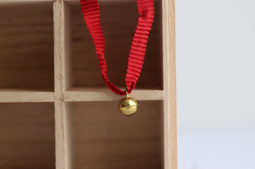
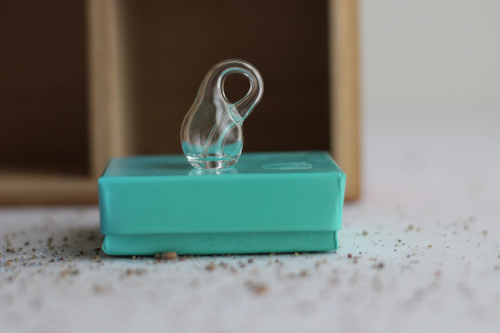
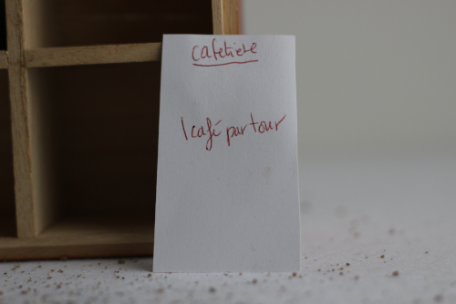

état actuel du marché
Voici les objets disponibles en ce moment sur le marché:
- un grelot festif
- une bouteille de Klein
- une carte à jouer
grelot festif

Souvenir associé : Ce grelot me rappelle toutes les petites attentions familiales lors des grandes et petites fêtes. Il vient de gourmandises en chocolat; on les réutilise souvent pour décorer des emballages de cadeaux divers. Je les collectionne, en voici un !
Numéro d'identification : 0a
bouteille de Klein

Souvenir associé : J'ai étudié en mathématiques, et la topologie est l'un de mes sujets préférés. Une bouteille de Klein n'est pas orientable, c'est-à-dire qu'on ne peut lui attribuer les notions de face interne/externe de façon cohérente. J'ai acheté cette bouteille par curiosité, et elle est un excellent sujet de conversation. Je serais heureuse de la voir continuer son chemin dans une autre maison.
Numéro d'identification : 0b
carte à jouer

Souvenir associé : Il y a quelques années, j'ai voulu faire un jeu de société basé sur les sentiments associés à la recherche en mathématiques. Ceci est l'une des cartes d'un des premiers prototypes du jeu.
Numéro d'identification : 0c
échanges passés
Pour consulter les objets qui sont passés par le marché aux sentiments : voir le marché passé.
contact
Pour plus d'information sur le projet, contactez l'artiste au escarcelle@finartcialist.com.
Pour consulter les autres oeuvres du projet finartcialist, consultez le site internet finartcialist.com.